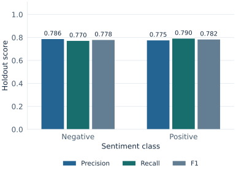
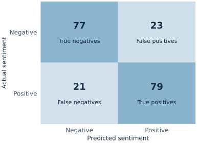

01. The business question
A team reviewing restaurant feedback might use predicted sentiment to prioritize sentences for a person to read. Missed negative feedback can stay low in the queue, while positive sentences flagged as negative can take up review time.
The evaluation uses macro F1, which gives the positive and negative classes equal weight. Class-level precision, recall and example errors show where the classifier would make a review queue less reliable.
02. Dataset and split
The Yelp subset contains 1,000 individual review sentences, with 500 positive and 500 negative labels before cleaning. The creators selected sentences for clear sentiment and omitted neutral examples. This study uses the Yelp text only.
- Positive on input
- 500
- Negative on input
- 500
- Unique after cleaning
- 996
I normalized text for duplicate detection, then removed four repeated sentence records before model fitting. The remaining sentences are split into roughly 60% training, 20% validation, and 20% holdout, stratified by label. Deduplication keeps copies of the same normalized sentence from crossing partitions.
Dimitrios Kotzias (2015), Sentiment Labelled Sentences, UCI Machine Learning Repository. Accessed November 18, 2026. UCI dataset · DOI 10.24432/C57604 · CC BY 4.0
The source dataset accompanies Kotzias, Denil, de Freitas, and Smyth (2015). From Group to Individual Labels Using Deep Features
03. Modeling workflow
- Validate labels
- Deduplicate text
- Split by label
- Fit and compare
- Review errors
Train-only text features
TF-IDF represents sentences using word features weighted by their frequency in a sentence and rarity across training sentences. Each vectorizer learns its vocabulary and weights from training text. Validation and holdout text use the resulting fixed transformation.
Compare simple models
A dummy classifier provides a baseline. The two logistic regression models compare single words with a combination of single words and adjacent word pairs. Validation macro F1 selects the model, and the untouched holdout provides performance and error estimates.
04. Holdout evaluation
The validation-selected unigram classifier achieved 0.780 holdout macro F1, compared with 0.333 for the prior-only dummy. It correctly labeled 156 of 200 holdout sentences (78.0%).
Candidate performance
The split had 597 training, 199 validation, and 200 holdout sentences. Unigrams had the highest validation macro F1. The unigram and bigram model had higher holdout average precision.
| Model | Validation macro F1 | Holdout macro F1 | Accuracy | Average precision |
|---|---|---|---|---|
| Prior-only dummy | 0.334 | 0.333 | 50.0% | 0.500 |
| TF-IDF unigrams (selected) | 0.799 | 0.780 | 78.0% | 0.843 |
| TF-IDF unigrams + bigrams | 0.794 | 0.755 | 75.5% | 0.858 |

Performance by label
| Label | Precision | Recall | F1 | Sentences |
|---|---|---|---|---|
| Negative | 0.786 | 0.770 | 0.778 | 100 |
| Positive | 0.775 | 0.790 | 0.782 | 100 |

Error patterns
The holdout produced 23 false positives and 21 false negatives. These examples show how the labels and the predictions differ on individual sentences.

- False positive.
Now the burgers aren't as good, the pizza which used to be amazing is doughy and flavorless.
Earlier praise appears alongside criticism of the current food. - False negative.
There was a warm feeling with the service and I felt like their guest for a special treat.
The writer praises the service indirectly by describing the feeling of being a guest.
Review excerpts from the Yelp subset of UCI Sentiment Labelled Sentences by Dimitrios Kotzias, CC BY 4.0.
05. Recommendations and limits
The selected classifier can prioritize examples for human review after evaluation on current feedback. Start with a labeled sample from the intended locations and review channels. Include neutral, mixed, and longer reviews and let staff review uncertain cases.
Track class-level recall and the cost of putting a complaint in the wrong queue. Review new error examples when the types of feedback or review sources change.
The released sample consists of short sentences selected for strongly positive or negative sentiment. A full review can mix praise with criticism, and a single sentence can depend on context or sarcasm. The holdout estimates performance on similarly curated Yelp sentences. A different platform, language, time period, or feedback channel would require its own evaluation.
A real review queue should give neutral, mixed, and unclear feedback a route to human assessment. Measure how often the system misses negative feedback and how many items the review team can reasonably inspect.
06. Reproduce the study
The pipeline downloads the UCI archive, validates and deduplicates the Yelp subset, trains the models, and exports metrics and figures. The repository includes dependency versions, dataset documentation, and tests.
cd projects/restaurant-sentiment
python -m pip install -r requirements.txt
python -m src.run